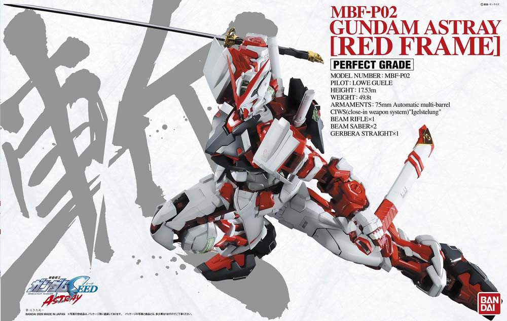

SD Gundam is a media franchise that spawned from the Gundam franchise. SD Gundam takes the mecha from Gundam and expresses them in super deformed and anthropomorphic style.
 SD Gundam
SD Gundam
HG is 1:144, about 13cm, with good shape and medium joints. There are not many parts, the box is small, more popular, suitable for novices, a few parts of HG have a streamlined skeleton, most hollow.
HG GundamRG is 1:144, the same ratio as HG, the active joint is better. The parts are medium, the box is small, and there is a one-piece skeleton, but due to the small proportion, the skeleton is relatively fragile.
 RG Gundam
RG Gundam
The MG is 1:100, with a fine appearance and reasonable joints. There are more parts, and the details of the engraved lines are more than RG. Most of the later models have complete skeleton internal structures.
 MG Gundam
MG Gundam
The PG is 1:60, 30cm or so, the fineness is high, the details of the engraved lines are many, and the movable joints are flexible. But the price is expensive, the parts are the most, and there is a perfect skeleton internal structure.
 PG Gundam